Step by step, from the PDF plan to the proposal. The screenshots come from the prototype, signed in as Tom Reilly (Admin at Northfield Framing & Siding), with the sample project Model home.
Use a computer
Measuring needs a mouse and a large screen. Measure is designed for a computer; on a phone, it will be read-only (see Prototype status).
Projects
What it is for: keeping every estimate in one list, with the bid due dates in sight.
Who can do it
Anyone with Measure plans (default roles: Admin and Project manager).
Open Measure: the Projects list shows each project with its client, location, type, estimator, bid due date and status. The tabs filter by status: Estimating, Proposal sent, Won, Lost. While a project is Estimating, the bid due date is highlighted when it is overdue, today or within 3 days.

Create a project
- Click New project.
- Fill in the project and the client (choose from your contacts, or create one without leaving the form), the job location (address, city, state, ZIP) and the proposal data (bid due date, estimator, and the job it belongs to, for change orders or additions).
- Click Create project.
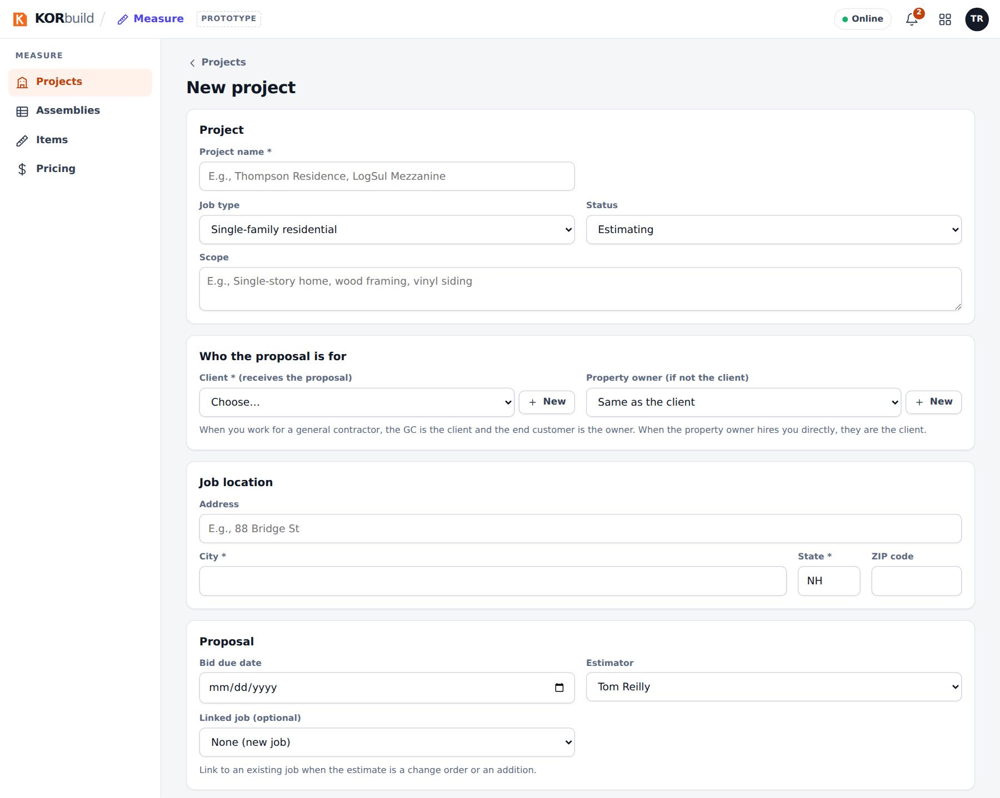
Name, client, city and state are required. To change the project later, open it and click Edit project; Delete is in the edit form.
Upload the plans
- Open the project.
- Click Upload PDF and choose the plan set. Each page becomes a sheet (A-101, A-201…).
The Sheets table shows each sheet's scale: no scale, checked or scale check off.
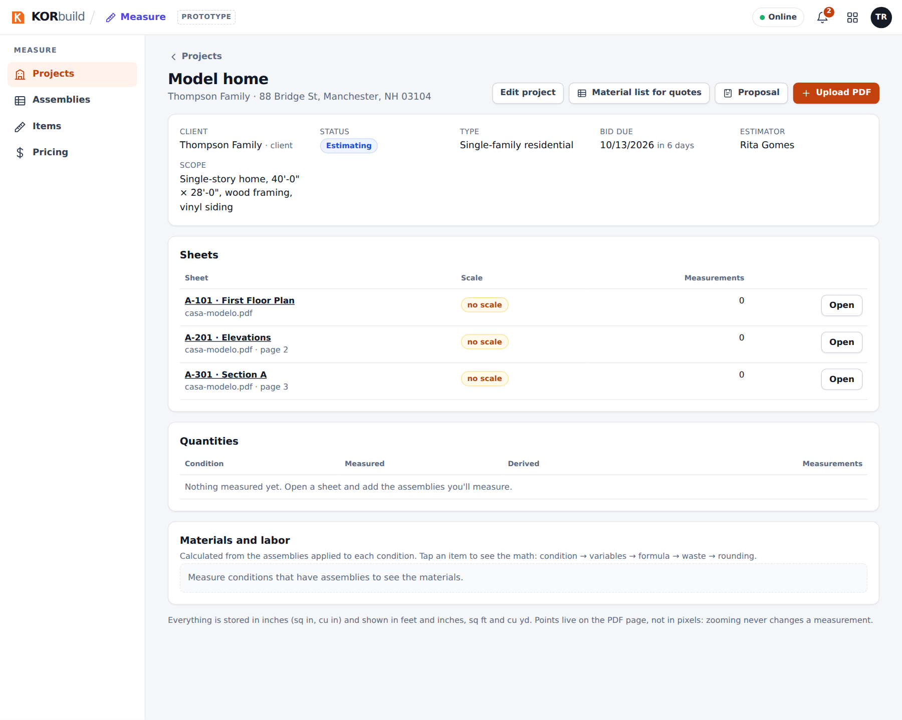
Set and check the scale
Why: every measurement depends on the scale. Checking it on a second dimension catches plans printed or scanned off scale.
- Open a sheet (Open). The plan fills the screen, with the conditions on the left.
- Click the scale button on the toolbar (Set scale, in amber, while the sheet has none).
-
Pick the scale written on the plan (for example,
1/4" = 1'-0") and click Use this scale. If the plan is off scale, use Calibrate from a dimension: click both ends of a known dimension and type its length.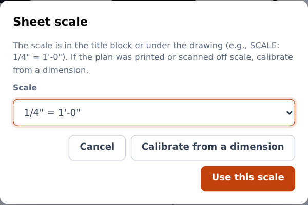
Choosing the sheet scale -
KORbuild asks you to check: click both ends of another known dimension and type its length as written on the plan (
40'-0",40',12'-6 1/2"…).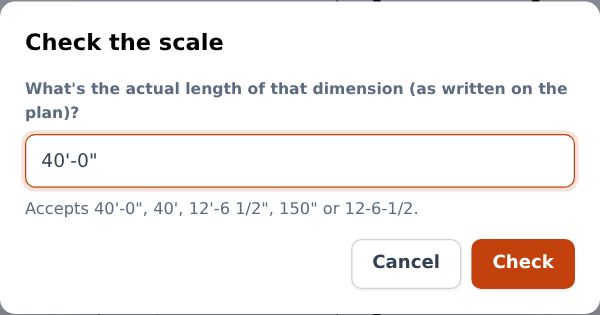
Checking the scale on a dimension -
The toolbar shows the result: checked in green, or off in red when the difference is above 1%.
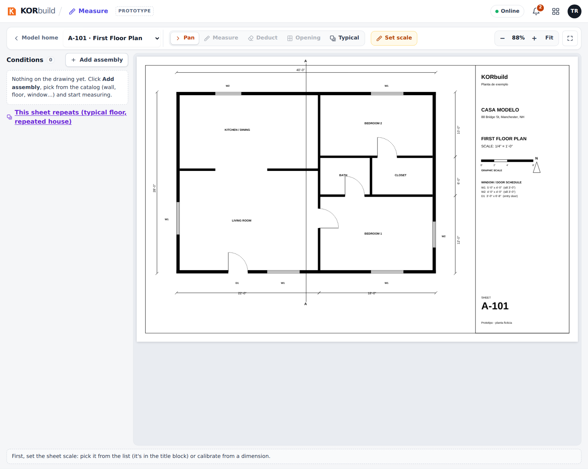
Add what you will measure (assemblies)
The drawing starts empty. You add one assembly for each thing you will measure on this sheet: the assembly brings the materials and labor that the measurement will produce.
- In the conditions panel, click Add assembly.
-
Choose an assembly. The list is grouped by type — Linear (walls), Area (floors, siding, slabs) and Count (doors, windows) — with a summary of its lines. Assemblies already on the drawing are marked. Just measure, no assembly creates a condition without materials (you can apply an assembly later).
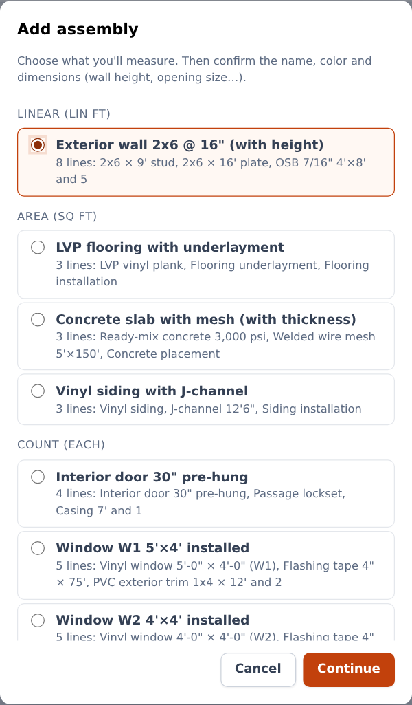
Choosing an assembly -
Click Continue and confirm:
- the name on the drawing (for example, Exterior walls);
- the color of its marks;
- its properties: wall height, pitch, slab thickness, the opening size of a window or door;
- for walls and siding, Deduct openings from: the window and door counts whose openings come out of this wall or area.
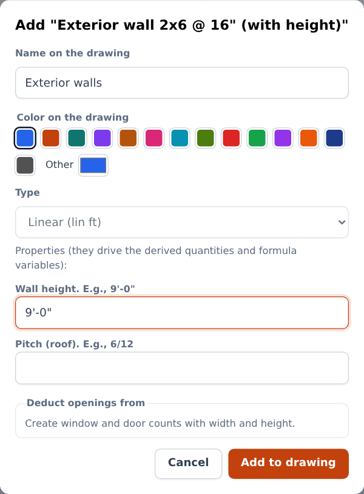
Name, color and dimensions -
Click Add to drawing. The condition appears in the panel, already selected for measuring.
Same condition on another sheet
In Add assembly, the section Already measured on other sheets in this project brings the same condition to this sheet (for example, the walls of the 1st and 2nd floor): the measurements add up to one total.
Measure
Select a condition in the panel; the Measure tool is on.
| Type | How to measure |
|---|---|
| Count | One click per item. |
| Linear | Click each point. Double-click or Enter finishes, Esc cancels, Backspace removes the last point. |
| Area | Same as linear; a click on the first point also closes the area. |
- Shift keeps the line straight (horizontal or vertical).
- Near (6 px) an existing point, the click snaps to it; Alt turns snapping off.
- Hold the space bar (or use Pan) to drag the plan. Ctrl + mouse wheel zooms at the cursor; Fit shows the whole sheet. Zoom never changes a measurement.
- While drawing, the dashed line shows the length or area live. The line at the bottom always says what to do next.

The panel groups the conditions by type, with the total on this sheet. Open a condition (arrow) to see its derived quantities (wall surface, volume…), its assemblies (apply or remove), its measurements on this sheet (delete one by one), and Edit or Delete. The check box next to the name shows or hides its marks on the drawing, without changing any quantity.
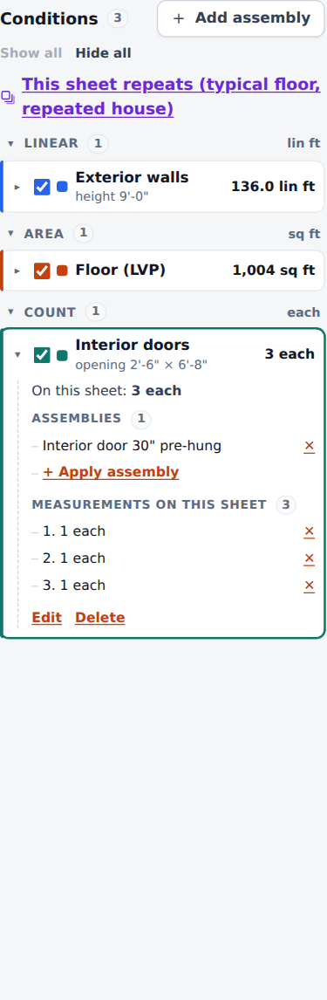
Deduct a cut-out (eraser)
On an area (a floor, for example), choose Deduct and draw the polygon to take out (stairs, a chimney, a bathroom with another finish). It appears hatched in red, with "− X sq ft", and is listed as a cut-out.
Windows and doors: openings
Windows and doors are counts with an opening size (width × height). Walls and siding that deduct them lose that area automatically: count one more window and the sheathing, drywall and siding already change.
On an elevation, the Opening tool goes further:
- Choose Opening and click two opposite corners of the window or door.
- Choose which count it is (it adds +1) and confirm the areas behind it to deduct from.
- Click Count and deduct.
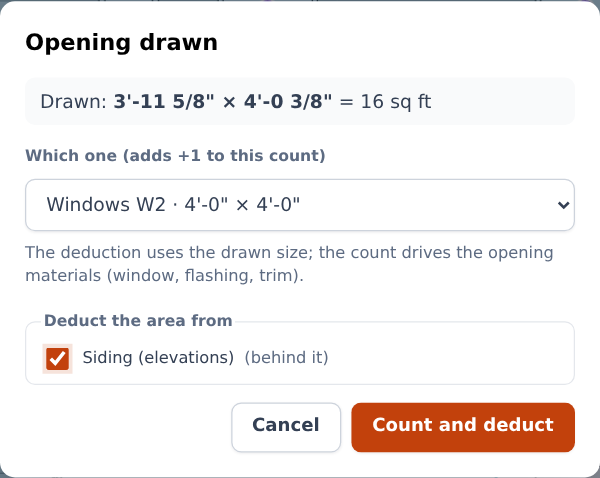
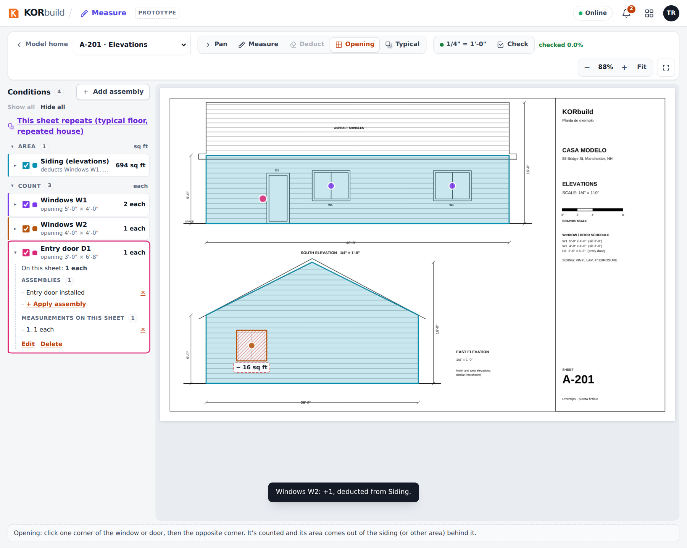
An opening already cut out by drawing is not deducted again by its size (no double deduction). Deleting the count or the cut-out deletes both.
Repeated units (typicals)
What it is for: measuring once what repeats — the typical floor, the typical apartment, the same house built six times.
- The whole sheet repeats: in the panel, click This sheet repeats (typical floor, repeated house) and enter the occurrences (for example, Building A × 3 and Building B × 3).
- Only part of the sheet repeats: choose Typical on the toolbar, click two corners of the region and enter the occurrences.
Everything measured inside counts × the total of occurrences — quantities, materials, quote lists and the proposal. The project shows, for each typical, the quantity per unit, per occurrence and in total.
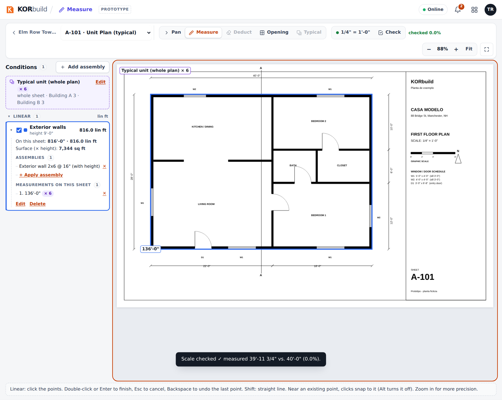
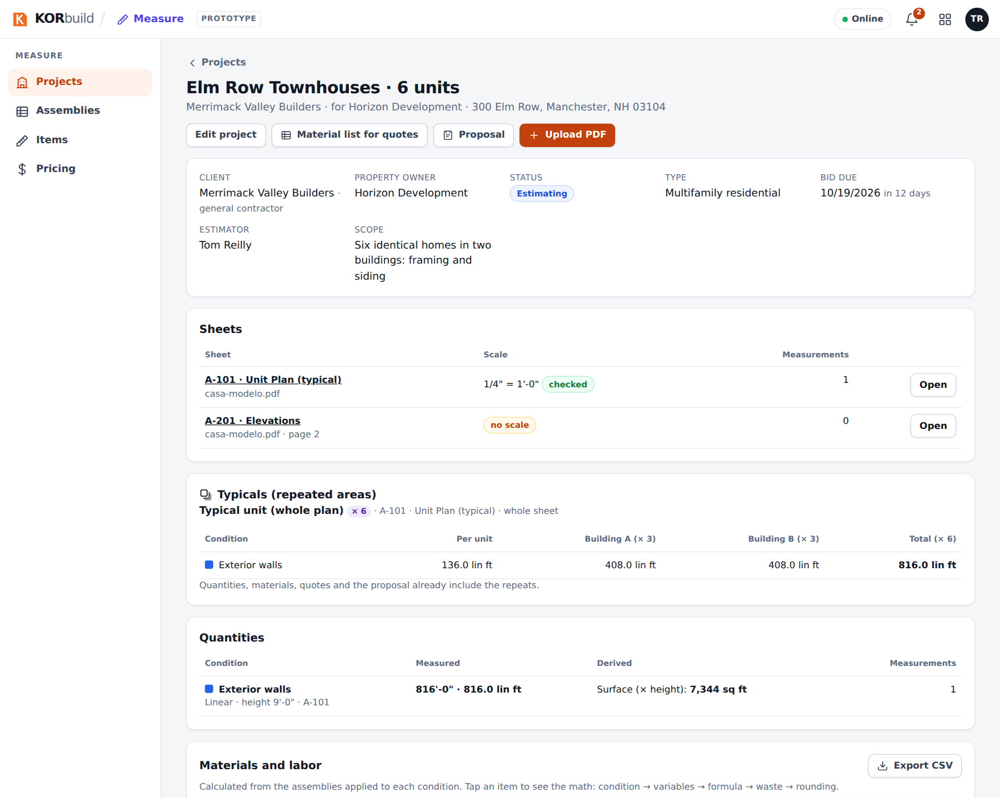
Review quantities, materials and labor
Back on the project (the project name, at the left of the viewer's toolbar):
-
Quantities: each condition with its measured total, its derived values (for example, Surface (× height)) and the number of measurements.
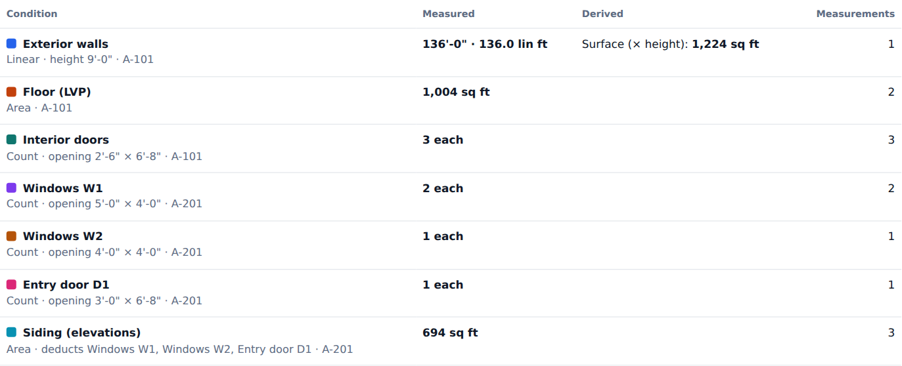
Quantities per condition -
Materials and labor: every item in its purchase unit (sheets, boxes, rolls, pieces, hours), grouped by category, with the estimated labor hours. Click an item to see the math: condition → variables → formula → waste → rounding.
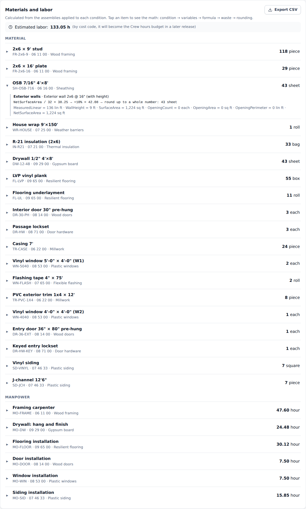
Materials and labor, with the math of one item -
To do: lines that cannot be calculated yet (for example, an assembly that needs a height the condition does not have, or a condition not measured yet).
- Export CSV downloads the quantities with the whole calculation.
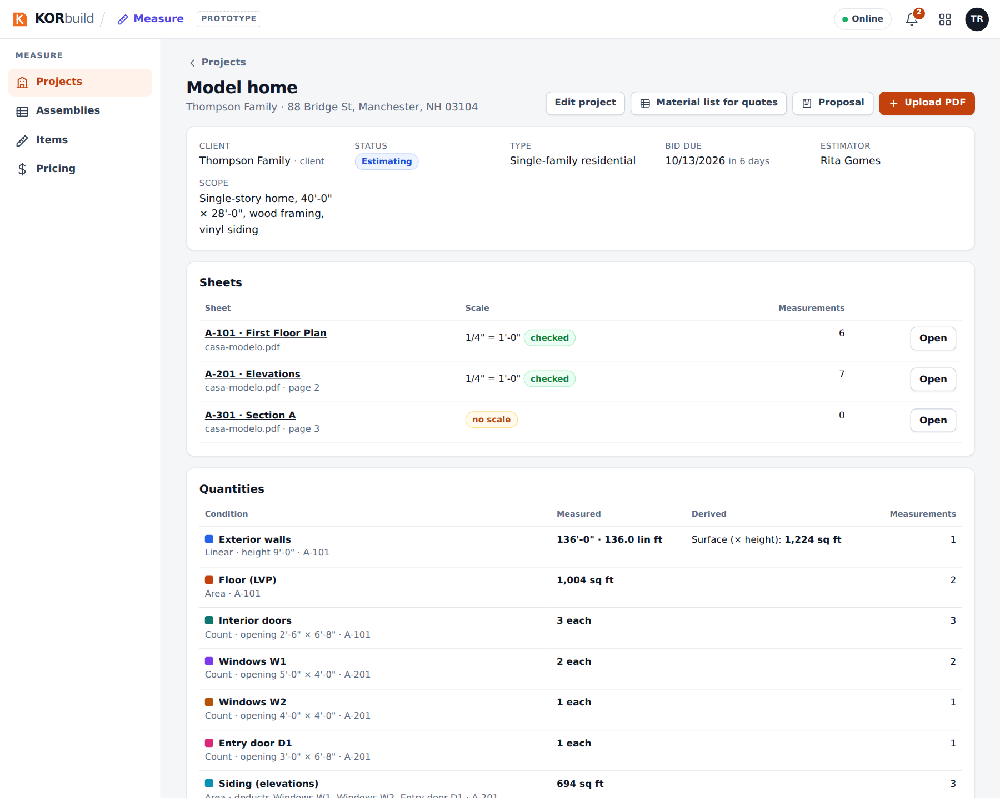
Request quotes from suppliers
- On the project, click Material list for quotes.
- Check Reply by, Deliver to and the Notes for the supplier.
- Each supplier gets its own list — only the items in the cost codes it supplies (Settings › Contacts) — in purchase units, already with waste and rounding, without prices and without labor.
- For each supplier:
- Send by email opens the email ready, with the list and the reply-by date;
- PDF opens the quote request with your logo and blank price columns;
- Enter prices received records the prices the supplier sent back: they become the items' prices from that date.
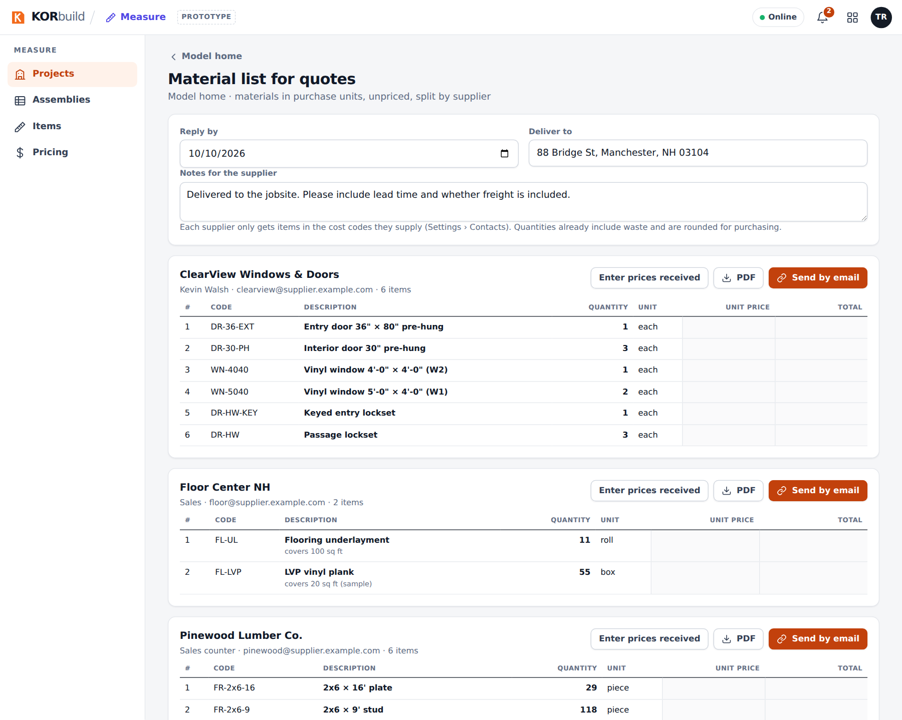
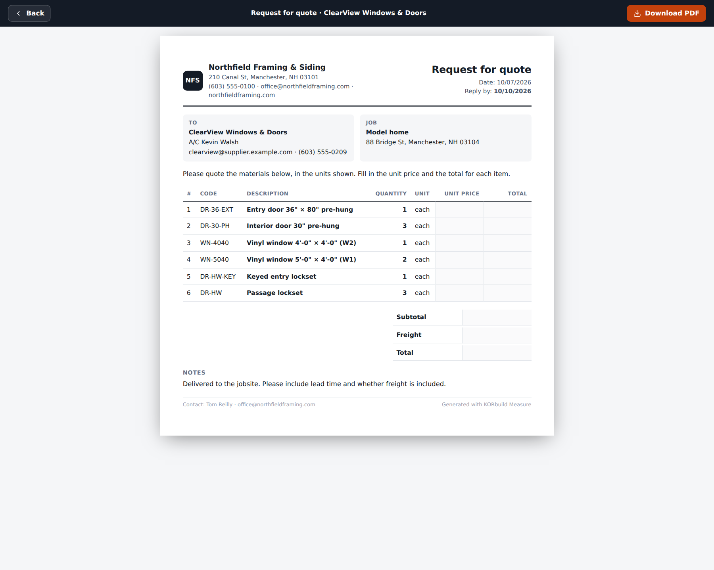
Prices and markups
What it is for: knowing the cost of every item and how it becomes a selling price.
Open Pricing:
- Markups: overhead % and profit, as markup (on cost) or margin (share of the selling price), and sales tax on materials. New version creates new markups from a date, with a reason; the old ones stay in the history.
- Items: the current price of each item, since when and where it came from (sample price list, typed in, Crew, a supplier quote). New price adds a price from a date; nothing is overwritten.
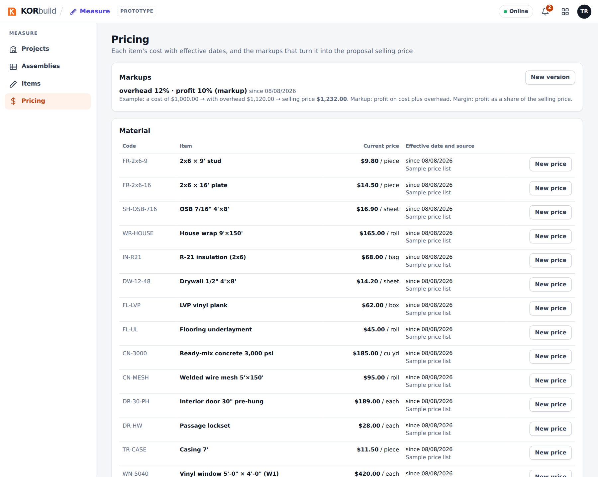
Who can change prices
Anyone with Items and assemblies (default role: Admin). Others see them read-only.
Build and issue the proposal
- On the project, click Proposal.
- Review the Scope (it comes from the project).
- Proposal items: one line per cost code, materials and labor together. Each line shows the basis (quantities and estimated hours), the cost, and the calculated price (catalog prices + markups).
- Type a different amount whenever you want (a closed price); clear it to go back to the calculated price.
- Uncheck a line to leave it out; add other items (mobilization, dumpster…).
- Show material quantities on the document is optional.
- Check the validity and the terms (they come from the company profile and can be adjusted).
- View document shows the PDF; Issue proposal numbers it (
P-2026-001…), freezes it and moves the project to Proposal sent. Each issue is a new version.
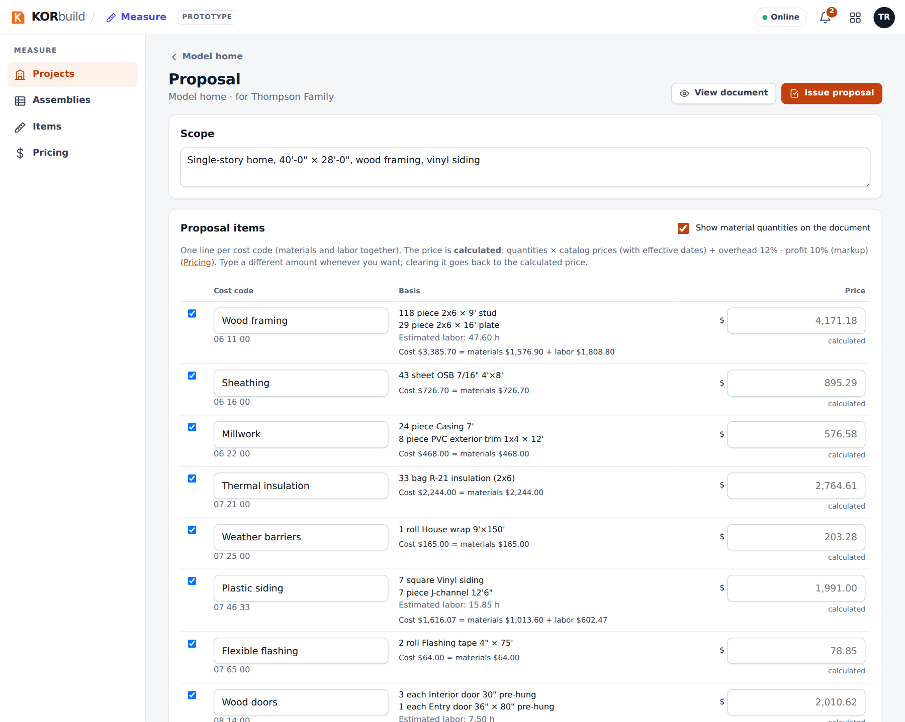
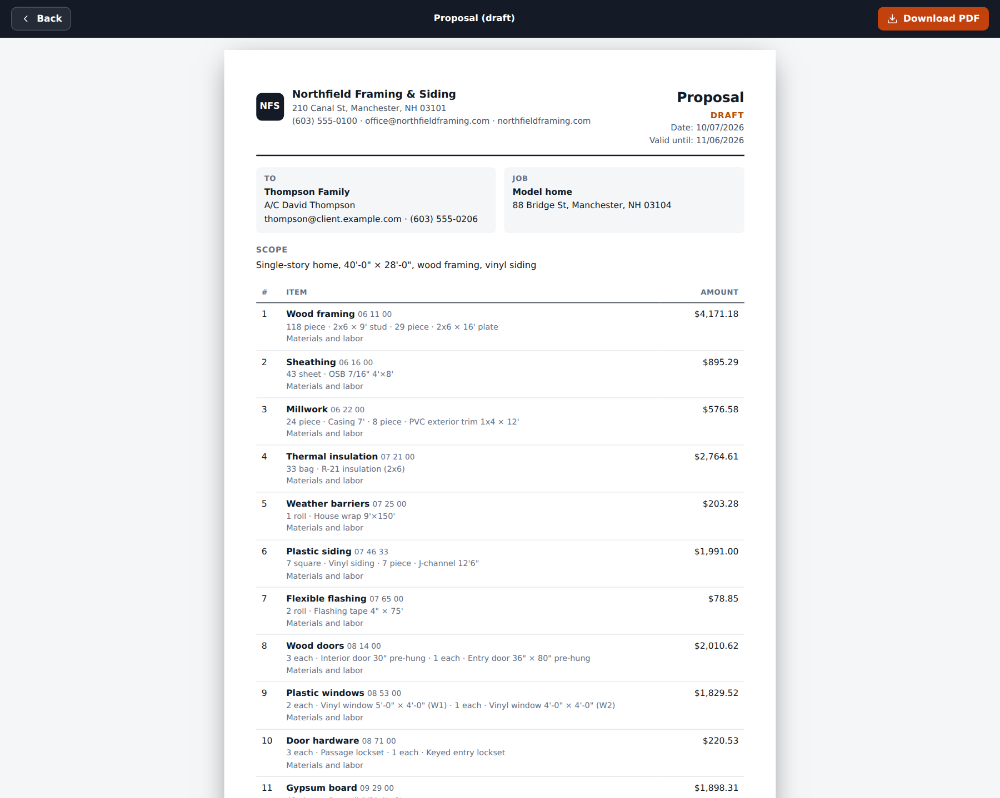
What the client never sees
The document shows only the price of each line. Cost, overhead and profit stay inside KORbuild, saved with the issued version.
When the client accepts, set the project to Won (Edit project). A won project can create the job: Create job from this project, with the client and the address already filled in.
The catalog: items and assemblies
Who can do it
Anyone with Items and assemblies (default role: Admin). Without it, items and formulas are read-only.
Items (Measure › Items) are what you buy or pay for: code, name, purchase unit, category (material, labor, equipment, subcontractor), cost code and notes. An item used in an assembly cannot be deleted.
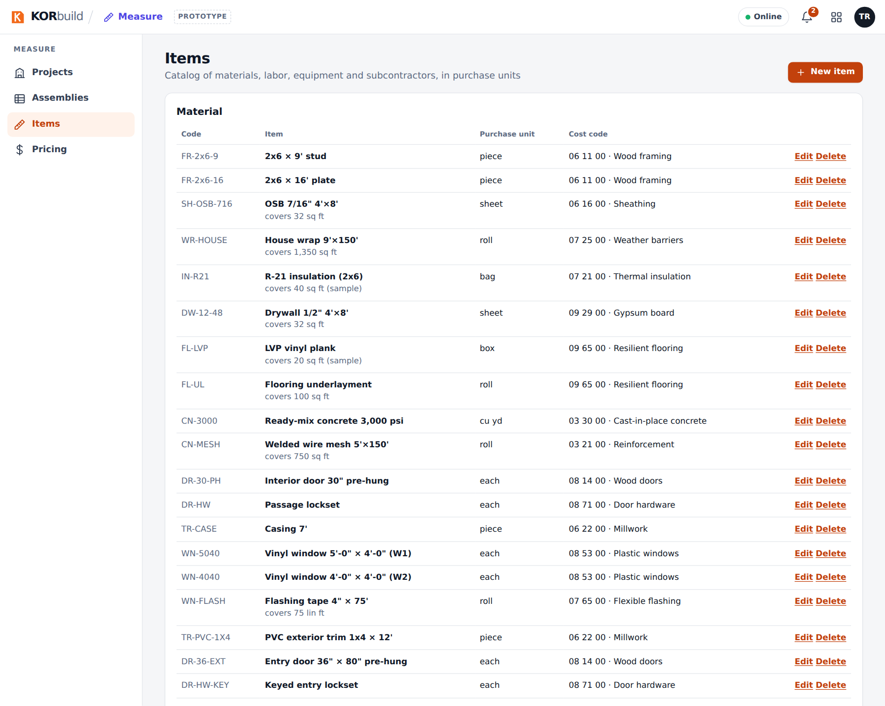
Assemblies (Measure › Assemblies) are lists of lines for a type of condition. Each line has:
| Column | What it is |
|---|---|
| Item | What the line produces, in its purchase unit. |
| Formula | The raw quantity, using the condition's variables (for example, NetSurfaceArea / 32 sheets of OSB). |
| Waste | A % added to the raw quantity. |
| Rounding | None, or up to 1, 0.5 or 0.25 (how the trade buys it). |
| Test | The result, live, with sample values: raw → with waste → rounded. |
Below the lines, the editor lists the variables available for that type of condition. Formulas accept only numbers, + − × ÷ ^, parentheses, those variables and ceil floor round min max sqrt abs; anything else is refused while typing and when saving.
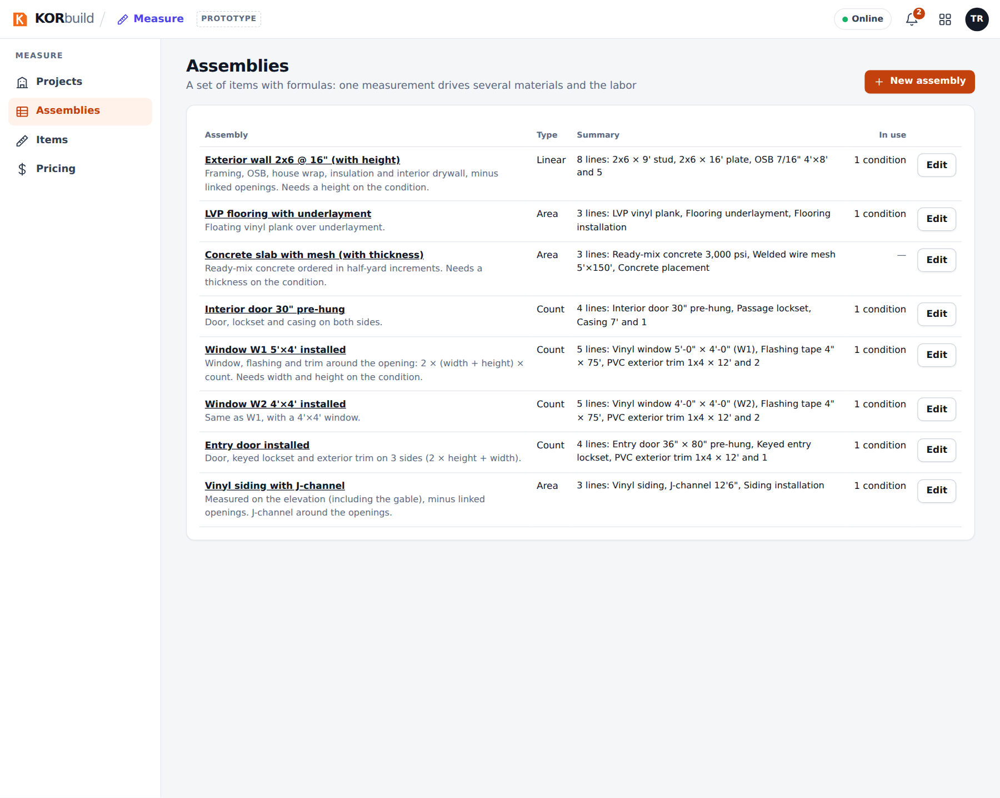
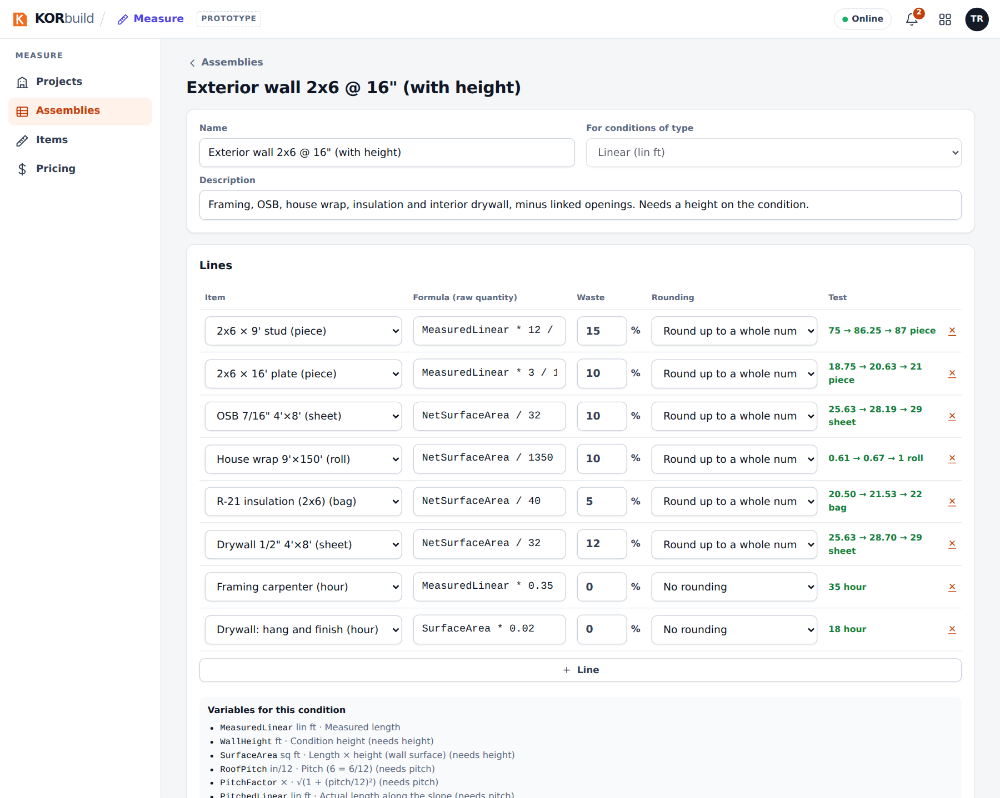
Messages and alerts
| Message | What it means | What to do |
|---|---|---|
| no scale (sheet) | The sheet has no scale yet; measuring is disabled. | Set and check the scale. |
| off (scale) | The check dimension differs by more than 1%. | Calibrate from a dimension, or zoom in and check again. |
| Missing on the condition: … | An assembly line needs a property the condition does not have (height, thickness, pitch). | Edit the condition and add it. |
| nothing measured yet | An assembly is on the drawing but has no measurements. | Measure it, or delete it. |
| Formula refused | The formula uses something not allowed, divides by zero or gives a negative result. | Fix the formula; the message names the line. |
| No supplier (quote list) | No contact supplies that cost code. | Mark the cost code on a supplier (Settings › Contacts). |
| No price (proposal) | An item has no price in the catalog. | Add a price in Pricing, or type the line price. |